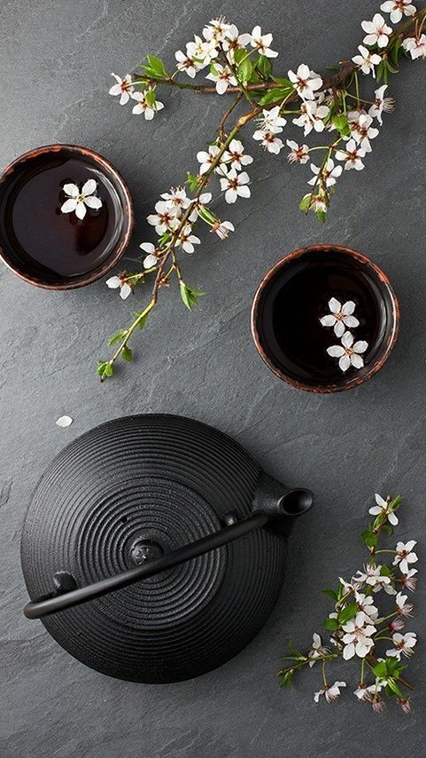
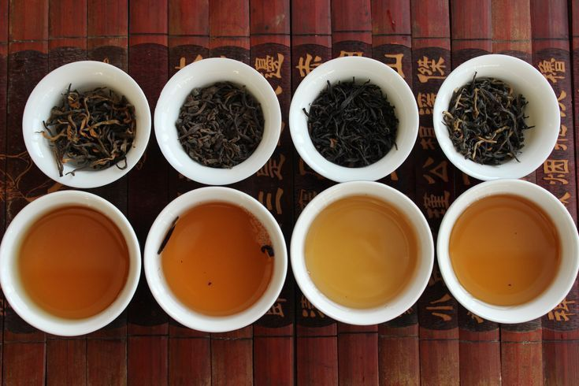
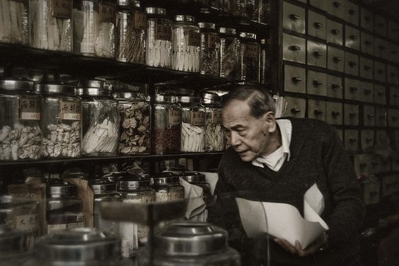

Чайная композиция
Откройте для себя утонченность классического чая, дополненную цветочными нотами. Узнайте секреты правильного заваривания, чтобы раскрыть весь аромат и вкус.
Откройте для себя богатство вкусов и целительные свойства этого древнего напитка, который помогает обрести гармонию и вдохновение в каждом глотке.

Откройте для себя утонченность классического чая, дополненную цветочными нотами. Узнайте секреты правильного заваривания, чтобы раскрыть весь аромат и вкус.

В мире существует множество сортов чая — от насыщенного черного до освежающего зеленого. Каждый обладает уникальным вкусом и ароматом, достойным внимания ценителей.

Познакомьтесь с древними ритуалами и церемониями, которые делают процесс чаепития по-настоящему особенным и помогают ощутить гармонию и спокойствие.
Узнайте о шести ключевых разновидностях чая, каждая из которых обладает своим уникальным вкусом, ароматом и способом заваривания.
Самый нежный вид чая, получаемый из молодых почек и листьев. Обладает мягким вкусом и тонким ароматом, богат антиоксидантами.
Не подвергается ферментации, сохраняя естественный цвет листьев и насыщенный травянистый вкус. Помогает бодрости и концентрации.
Полностью ферментированный чай с ярким, крепким вкусом и ароматом. Часто подаётся с молоком или лимоном.
Полуферментированный чай, сочетающий нежность зелёного и насыщенность чёрного чая. Разнообразие оттенков вкуса — от цветочного до орехового.
Ферментированный чай, традиционно выдерживаемый годами. Имеет глубокий, землистый вкус и часто используется в китайской чайной церемонии.
Напитки из смеси трав, цветов и фруктов. Не содержат чайного листа, но сохраняют аромат и полезные свойства растений.
Получите доступ к уникальным рекомендациям, рецептам и секретам, которые помогут вам раскрыть всю глубину и магию чаепития.